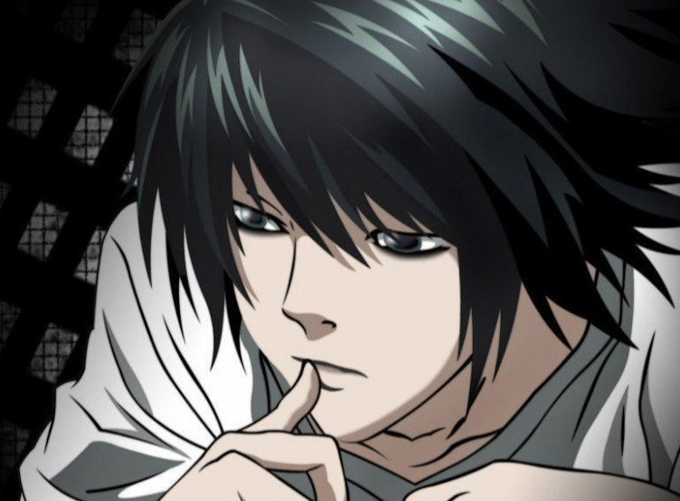

"Death Note" (Death Note) is a Japanese manga originally written by Oba Tashira and illustrated by Takeshi Obata. It was published in Shueisha's magazine "Weekly Shonen Jump" No. 36 in August 2003. The manga mainly tells the story of high school student Light Yagami who gets a Death Note and attempts to use the notebook to kill criminals and create a new world without criminals. The God of Death, Riko, owned such a Death Note, but lost it in the world. Genius high school student Light Yagami picked up the notebook. Thinking it was a prank, he wrote the names of the criminals shown on TV in the notebook, confirming the authenticity of the notebook's abilities. Tired of the decaying world, Light Yagami used the power of the notebook to start killing criminals, hoping to build a beautiful ideal world without crime and become the "god of the new world." The deaths of consecutive criminals have attracted the attention of police all over the world, and also attracted the attention of the world's number one detective L. Can L arrest Yagami Yue, who is called "Kira" by his admirers? A Death's Notebook kicks off a brain war at the pinnacle of excellence between geniuses. Luk, who had already lost interest in the human world, sighed while watching the thrilling battle of wits, “Human beings are so interesting. After the Death God Ryuk lost the Death Note, it was picked up by 13-year-old middle school student Kyōtaro and used it as a diary. He accidentally killed five classmates who had bullied him, believing that the notes were true. The horrified Jintaro used the death eraser given by Liu Ke to erase the names on the notes, resurrecting the five people.

After learning that the five people were resurrected, the two police officers who investigated the matter rushed to the school to investigate and inquire, but they were killed together with the five resurrected people. Jingtaro asked Liu Ke and found that another notebook of Liu Ke was missing, and thought of Miura who was also bullied by the five people and questioned by the police. Finally, Kagetaro found Miura, used an eraser to erase the names of the seven dead people, and then handed the second notebook to the two resurrected police officers. In front of the police, Gentaro asked Miura to kill himself as an experiment, and then erased his name with an eraser and resurrected him to make the police believe him. Afterwards, the four burned the notes and kept them secret. Seven years later, when Kagetaro grew up, he kept the first notebook and published the story of Death Note as a novel.